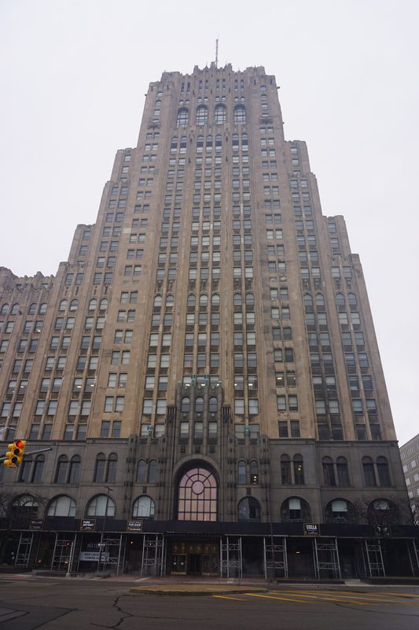
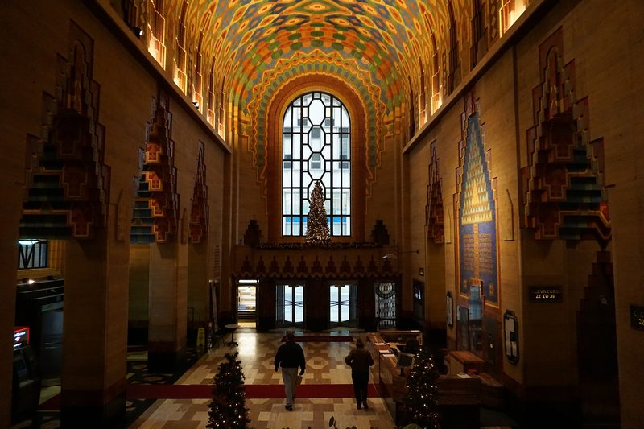

Archive
Every published brief, newest first.
- Monday Nov 23 – Wednesday Nov 25, 2026 · Snapshot compiled Mon Nov 23, 2026, 7:20 pm ET (Urban Concierge - Detroit)detroitdailysync-2026-11-23-1920
Around the city

The Spirit of Detroit. Photo: 42-BRT, public domain, via Wikimedia Commons 
The Fisher Building, New Center. Photo: Michael Barera, CC BY-SA 4.0, via Wikimedia Commons 
Little Caesars Arena. Photo: Michael Barera, CC BY-SA 4.0, via Wikimedia Commons 
Michigan Central Station, Corktown. Photo: Michael Barera, CC BY-SA 4.0, via Wikimedia Commons 
Detroit Institute of Arts. Photo: Michael Barera, CC BY-SA 4.0, via Wikimedia Commons 
The Guardian Building. Photo: Michael Barera, CC BY-SA 4.0, via Wikimedia Commons 
Campus Martius Park. Photo: Michael Barera, CC BY-SA 4.0, via Wikimedia Commons 
The Renaissance Center. Photo: Patricia Drury, CC BY 2.0, via Wikimedia Commons


Photos: Wikimedia Commons contributors, used under the license on each caption
Get the Urban Concierge brief by email
Detroit events, weather and getting-around updates. Unsubscribe anytime.